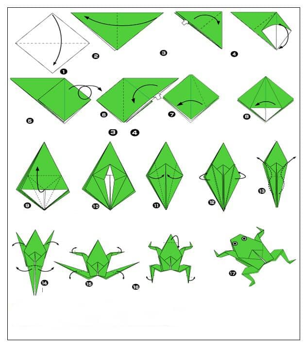

Step 1:Start with a square sheet of paper with the white side up. Fold it in half horizontally and un then unfold.
Step 2:Fold the paper in half vertically.
Step 3:Fold the paper in half vertically again and then unfold it. You’ll use this crease as a guide in later steps.
Step 4:Fold the paper down along the dotted line.
Step 5:Crease this fold well and then unfold it.
Step 6:Fold the paper down along the dotted line.
Step 7:Crease this fold well and then unfold it.
Step 8:Turn the paper over.
Step 9:Fold the paper down along the horizontal dotted line.
Step 10:Crease this fold well and then unfold it.
Step 11:Turn the paper back over to the way it was before.
Step 12:Fold the paper down along the existing creases just like you’re making a Water Bomb Base.
Step 13:Push everything down flat.
Step 14:Fold the bottom part of the paper up along the dotted line.
Step 15:Fold the left side of the paper towards the centre along the dotted line. Don’t fold that top triangle. The paper will tuck in behind it.
Step 16:Fold the right side of the paper towards the centre along the dotted line. Again, don’t fold the top triangle but tuck the paper in behind it.
Step 17:Fold the bottom part of the paper up along the dotted line.
Step 18:Crease this fold well and then unfold it.
Step 19:Fold the paper down along the dotted line.
Step 20:Crease this fold well and then unfold it.
Step 21:Pull the two flaps of paper on the inside of either side out. Just like you’re making a Boat Base.
Step 22:Fold the two flaps of paper on each side down along the dotted lines.
Step 23:Fold the top right part of the paper up along the dotted line. This will make one of the frog’s front legs. Don’t worry about the angle of the crease. As long as you get a shape like what you see in the next step it’s fine.
Step 24:Fold the left part of the paper up along the dotted line to make the other front leg. It should match the other leg from the previous step.
Step 25:Fold the bottom right part of the paper up along the dotted line. This will form one of the back legs. This crease also doesn’t have to perfectly match the diagrams as long as you end up close to the shape in the next step.
Step 26:Fold the bottom left part of the paper up along the dotted line to form the other back leg.
Step 27:Fold the entire model up along the dotted line.
Step 28:Fold the entire model up along the dotted line.
Step 29:Turn the whole model over.
